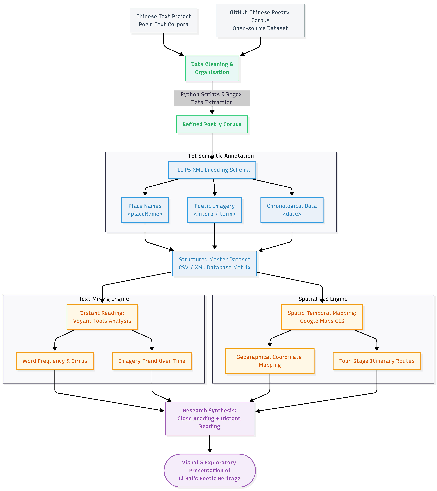

Loading map…
Base Map
Modern Names
The project uses a digital humanities approach. A small corpus of Li Bai’s poems was selected from reliable online text collections. The poems were cleaned and organised before analysis. TEI encoding was then used to mark structural and thematic features, especially place names and imagery. After the texts were prepared, Voyant Tools was used to analyse word frequency, keyword patterns, and term distribution. The identified place names were also used to create a simple map visualisation. This method combines close reading and distant reading.

In alignment with Open Science paradigms and Digital Humanities benchmarks, our complete data schema—comprising structural databases, TEI P5 semantic corpora, and GIS spatial layers—is published below for replication and evaluation.
Institutional Data Gateways & Engineering Environments: